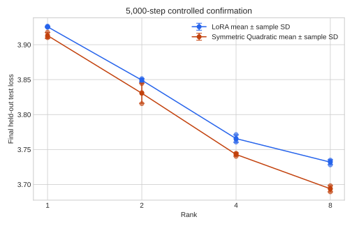
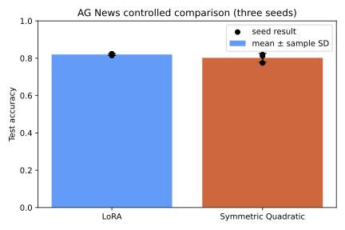
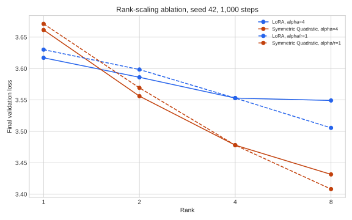
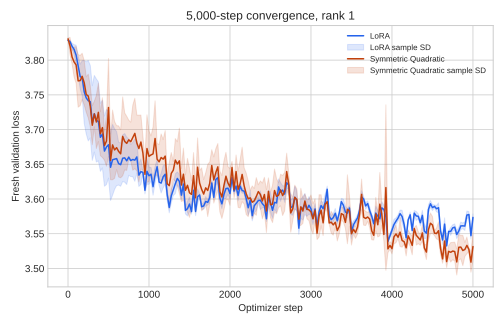

Project 01 · Results
Controlled evidence is task dependent
Values are means ± sample SD across seeds 42, 123, and 456. Lower loss is better; higher accuracy and macro-F1 are better.
5,000-step WikiText-2 confirmation
| Rank | LoRA final val | Symmetric final val | LoRA test | Symmetric test |
|---|---|---|---|---|
| 1 | 3.5734 ± 0.0051 | 3.5314 ± 0.0207 | 3.9256 ± 0.0009 | 3.9131 ± 0.0042 |
| 2 | 3.4773 ± 0.0057 | 3.4340 ± 0.0249 | 3.8492 ± 0.0025 | 3.8305 ± 0.0144 |
| 4 | 3.3483 ± 0.0093 | 3.3101 ± 0.0011 | 3.7656 ± 0.0054 | 3.7429 ± 0.0024 |
| 8 | 3.3054 ± 0.0117 | 3.2446 ± 0.0096 | 3.7319 ± 0.0035 | 3.6938 ± 0.0044 |

AG News classification
| Method | Test accuracy | Test macro-F1 |
|---|---|---|
| LoRA | 0.8201 ± 0.0051 | 0.8156 ± 0.0050 |
| Symmetric Quadratic | 0.8021 ± 0.0240 | 0.7929 ± 0.0315 |

Single-seed scaling ablation
At 1,000 steps, holding α/r=1 retains the sign pattern: rank 1 favours LoRA while ranks 2, 4, and 8 favour Symmetric. At rank 8 the Symmetric-minus-LoRA loss gap changes from −0.1177 with α=4 to −0.0975 at constant effective scale. Because only seed 42 was run, this is exploratory.

Convergence
The independent 1,000-step screen must not be joined to the 5,000-step trajectories. Within the fresh confirmation trajectories, rank 1 initially favours LoRA and crosses between steps 2,000 and 3,000; ranks 2–8 favour Symmetric from the recorded 1,000-step point onward.
